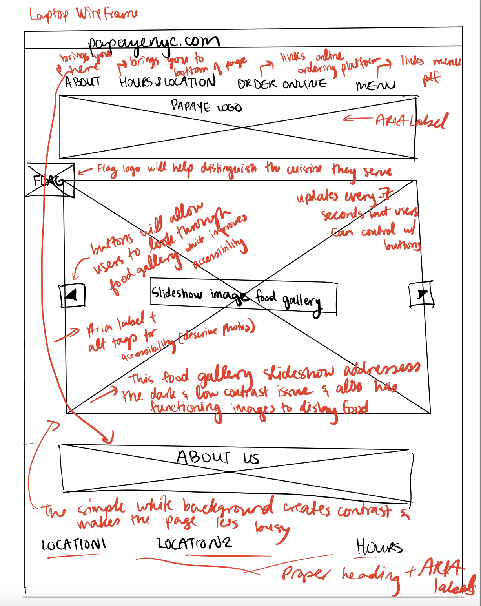
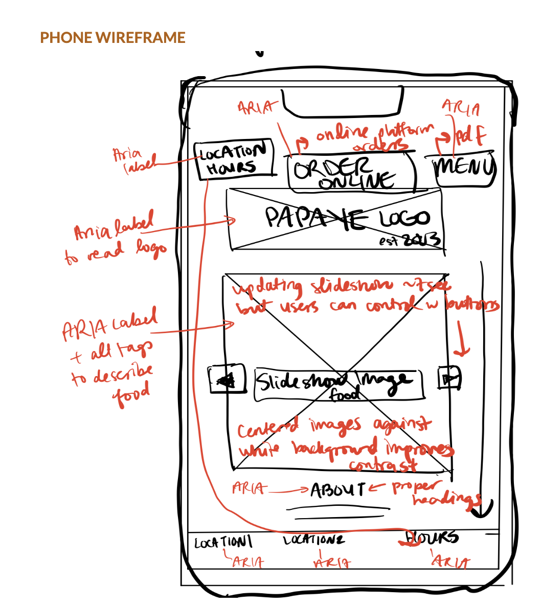
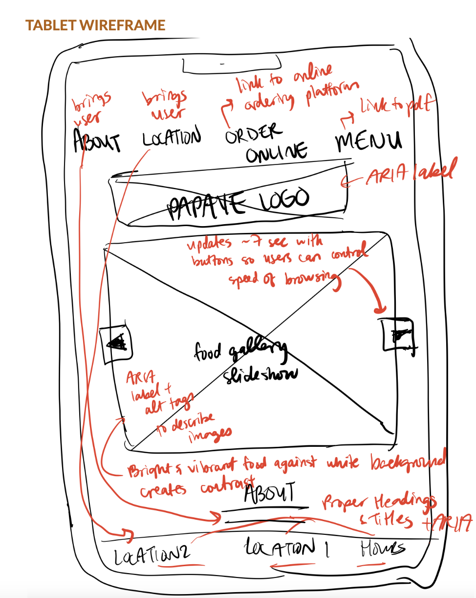
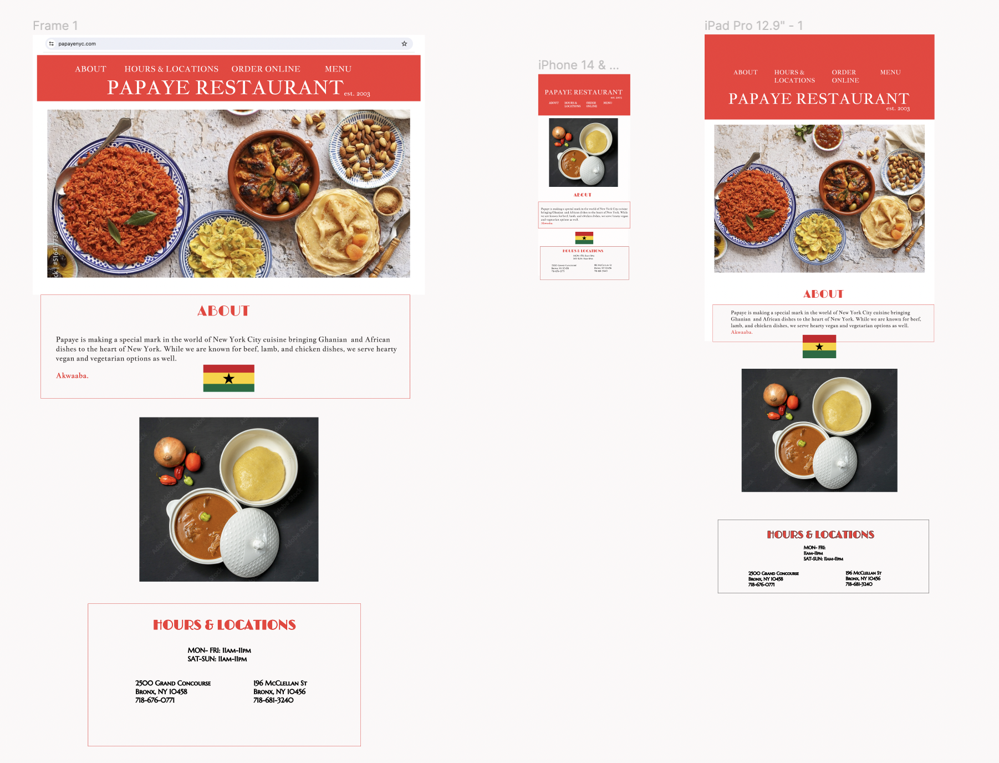
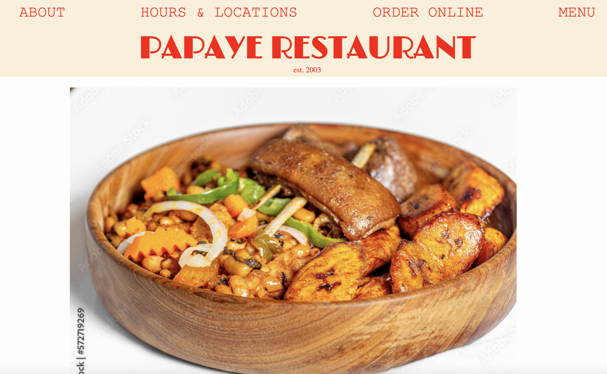

Background: Though I was born in New York City, I spent my early childhood growing up in Cape Coast,Ghana where most of my family lives (everyone except my mum and brother). And though I love New York, I often long for a sense of Ghana. Particularly, the traditional Ghanaian foods my mum cooks brings back memories. My mum is often busy at work and when she did not have to cook growing up, we often went to Papaye Restaurant, a small family-run Ghanian restaurant a few blocks from our apartment in the Bronx.
Below are my 9 design sketches for possible redesigns

Below is my final sketch for the redesign. I used a white background and red logo banner and centered a vibrant photo of traditional Ghanian food.

I then made wireframes of my design explaining the main components and how the design looks on a laptop, phone, and tablet. See below
  I made figma mockups of my homepage redesign and how it would look on the three devices.
Here is the link to the figma page Style Guide: (I ended up changing the color palette slightly from the figma design because my red and white original colors lacked contrast. I also ended up adding 2 buttons in my actual design) Papaye Logo, About Section Title, Hours and Locations Section: Limelight Navigation Bar buttons and View on Map Buttons: “Courier New” About Section Info: “Courier New” Hours and Locations Info: “Marcellus SC” Colors: Main Restaurant Logo banner background-color: rgb(252, 239, 216) Papaye Logo, Navigation bar Buttons: RED Body background color: white Common buttons/assets: NavBar: NavBar utilizes a flat design. “ABOUT,” “HOURS & LOCATIONS,” “ORDER ONLINE,” and “MENU” buttons are clickable. About: on click —> scrolls to the About section Hours & Locations: on click → scrolls to Hours & Locations section at the bottom Order Online: on click —> navigates to Doordash order page Menu: on click —> navigates to pdf with menu and prices VIEW ON MAP BUTTONS: I included 2 buttons in the hours and locations seciton that on click take you to directions to the 2 restaurant locations
Importantly, I wanted to fix contrast issues and create a lighter background against which the vibrant photos of traditional Ghanaian and African dishes would really pop out. I chose a light yellow, red, and white color palette and used the yellow and red only for the restaurant's logo at the top and the hours and locations banner at the bottom. Against the yellow and white background I used bold and fun red text to ensure contrast and consistency in design. This establishes a clear palette and good contrast for accessibility. The buttons right at the top give users everything they need to know about the site right away and gives them options to easily navigate. The buttons utilize flat design to add to the sleek look:


In between the site's colorful logo at the top and the hours and location banner at the very bottom of the site, I set a white background to create a simple and clean look. This creates a clear hieararchy where the images of food are framed by the restaurant's logo and information on how to visit it. Atop the white background, I chose a couple of vibrant images of Ghanian food to contrast the plain background around it and also to display the cuisine This addresses the low contrast issue and lack of images on the original site. In terms of improving accessibility, I also use aria labels and alt tags on my images and buttons. I also used a WAVEAIM acceisbility to check that my color palette was accessible and good. In the main image componenet that loads right away on the site, I decided to have images update with food to show the variety of food so users wouldnt have to look far. The screenshots below demonstrate how the color palettes and top and bottom banners (restaurant logo and hours and locations, respectively), work to frame the vibrant images of the food gallery against a white background.


Overall, I am happy with the design and though my final product differed a little from my original designs. My redesign creates a more modern feeling, utilizes light colors to create contrast with the vibrant images of the food, and utilizes alt tags and aria labels to be more accessible to people who might have visual issues.